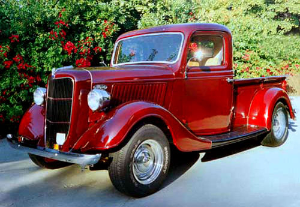
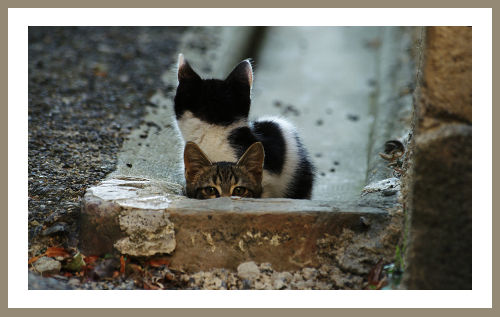
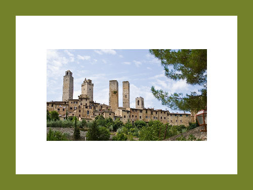
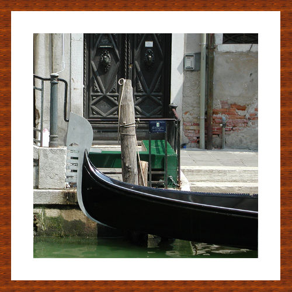

Photo travaillée sur GIMP
Nous avons retouché cette image avec les calques niveaux.
Photo avec Marie-Louise
Nous avons remise droite et créé une Marie-Louise.
Exercice lors de test
Nous avons supprimé des éléments et fait une Marie-Louise premier test.
Exemple fait moi-même
J'ai fait cette Marie-Louise avec l'outil motif dans GIMP
